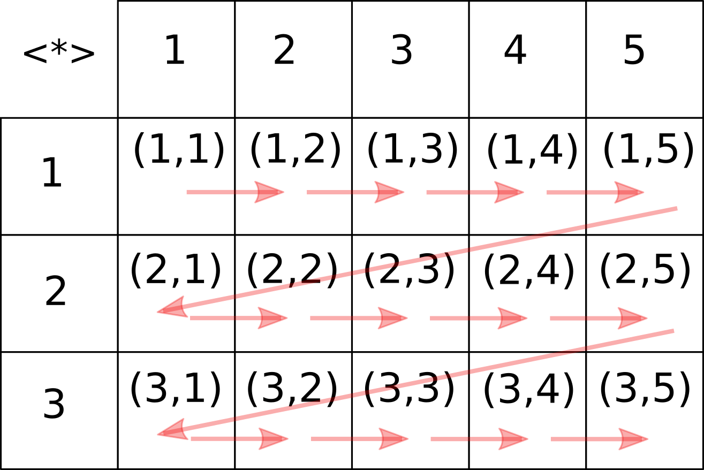
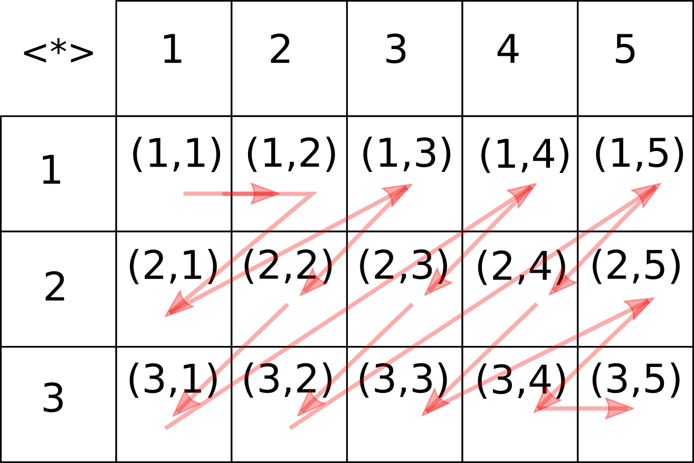

Типы в функциональном программировании — это больше чем описание данных. Это, в первую очередь, описание структуры образуемой данными, в виде математических законов, справедливых для этой структуры. Мы видели это на примере типов для электрических сопротивлений, разнообразных моноидов, изображений и т. д. Типы могут обладать структурой, которая позволяет не только комбинировать вычисления, но и управлять потоком вычислений. Для управления потоком в императивном программировании используются ветвление, циклы или исключения, в функциональном подходе часть и этой работы берут на себя типы.
Простой и часто встречающийся пример — тип Maybe a, говорящий о том, что величина значения типа a может быть неопределена.
(<$>) для обработки множества значений в списке. Примените этот оператор к значениям типа Maybe. Можно ли сказать, что типы [a] и Maybe a имеют сходную структуру? Определите две функции, связывающие эти два типа listToMaybe :: [a] -> Maybe a maybeToList :: Maybe a -> [a]
Оператор (<$>) имеет своё имя: fmap и он определён для всех типов, являющихся функторами. Самое общее определение для функтора — это контекст, в котором производятся вычисления.
(<$>) с помощью команды :t. Посмотрите (с помощью команды :i в интерпретаторе) какие ещё знакомые вам типы принадлежат к классу Functor.(<$>) удвойте определённые элементы списка:[Just 2, Nothing, Just 3, Just 15]
Control.Applicative. Теперь нам доступны новые возможности для работы с функторами. Посмотрите на то, как действуют операторы <|> и <*>, вычислив в Объясните своими словами, для чего нужны операторыNothing <|> Just 5 Just 3 <|> Just 5 Just 3 <|> Nothing Nothing <|> Nothing Nothing <*> Just 5 Just (4*) <*> Just 5 Just (2*) <*> Nothing (+) <$> Just 3 <*> Just 7 (+) <$> Nothing <*> Just 7 (+) <$> Just 3 <*> Nothing
<$> (fmap), <|>, <*>, применительно к функтору Maybe.sqrtM, которая вычисляет квадратный корень вещественного числа и для отрицательных чисел возвращает Nothing. Вычислите с её помощью следующие выражения:
(+2) <$> find (< 2) [2,3,1,4] (*) <$> find odd [2,3,1,4] <*> find even [2,3,1,4] (*) <$> find odd [2,6,10,4] <*> find even [2,3,1,4] let vars = [("a",45),("x",7),("z",32)] (*) <$> lookup "x" vars <*> lookup "a" vars
Either, и объясните его функториальные свойства, судя по примерам:
(*2) <$> Right 4 (*2) <$> Left 4 (*2) <$> Left "hello" (+) <$> Right 8 <*> Right 5 (+) <$> Left "No!" <*> Right 5
sqrtE, которая вычисляет квадратный корень вещественного числа, и для отрицательных чисел возвращает сообщение об ошибке, в виде значения Left "sqrt: got negative argument!". Вычислите с её помощью выражения:
[]: [] <|> [2,3] [1,2,3] <|> [4,5] [2] <|> [] [] <|> [] [] <*> [2,3,4] [(4*)] <*> [2,3,4] [(4*), (3+)] <*> [2,3,4] (+) <$> [2,3] <*> [4,5,6] (+) <$> [] <*> [2,3] (+) <$> [1,2,3] <*> []
spaces "ABC" ["ABC", "AB C", "A BC", "A B C"]
spaces s = case s of x:xs -> (x :) <$> go xs "" -> [""] where go s = case s of x:xs -> (++ [x]) <$> ["", " "] <*> go xs "" -> [""]
sqrtL, которая вычисляет квадратный корень вещественного числа, причём, для положительных аргументов она должна возвращать как положительное, так и отрицательное значение корня, для нулевого — только ноль, а для отрицательных значений — ни одного значения. Вычислите с её помощью выражения:
IO и объясните как он действует, в качестве функтора:
("Hello, " ++) <$> getLine let readNum = read <$> getLine (+) <$> readNum <*> readNum print 6 <|> error "!!"
Applicative и Alternative. В определении класса Applicative присутствует полиморфная функция pure, которая позволяет ввести любое значение в функтор. Для экземпляров класса Alternative определено универсальное значение empty, соответствующее нейтральному значению по отношению к оператору (<|>) (они образуют моноид). sqrtA, обобщающую функции sqrtM и sqrtL так, чтобы она работала c любыми альтернативными функторами: Maybe, [], IO, причём, для списков, возвращала несколько корней.bisectionA, отыскивающую точку смены заданного условия методом бисекции: bisectionA :: (Alternative f, Eq a) => (Double -> a) -> (Double, Double) -> f Double
bisection p (a,b) -- тестовая функция не меняется на границах | ... = empty -- достигнута абсолютная или относительная погрешность | ... = pure c -- шаг бисекции | otherwise = bisection p (a,c) <|> bisection p (c,b) where c = mean a b
С помощью fmap можно применить любую функцию к функтору не разрушая его. А что насчёт функций, которые возвращают значение в контексте? Например, как можно дважды применить функцию sqrtM, чтобы вычислить m?
Попробуем начать с использования оператора <$>:
sqrtM <$> sqrtM 16 Just (Just 2) sqrtM <$> sqrtM (-1) Just Nothing
Результат мы получили, но он оказался в контексте дважды. Какой смысл имеет выражение Just (Just 2)? С точки зрения "успешности" вычислений это просто успешное вычисление, то есть Just 2. В свою очередь выражение Just Nothing означает, что вложенное вычисление окончилось неудачей, а вместе с ним и всё вычисление.
join :: Maybe (Maybe a) -> Maybe a, которая занималась бы "соединением" контекстов так, чтобы можно было получить такие результаты: join $ sqrtM <$> sqrtM 16 Just 4 join $ sqrtM <$> sqrtM (-1) Nothing
Связка join $ f <$> x универсальна и позволяет связывать в цепочки любые вычисления с контекстом. Для неё есть особое обозначение: =<<
f =<< x ≡ join $ f <$> x
Мы определили для типа Maybe функцию join и сразу повысили его "ранг", позволяя объединять в цепочку функции, возвращающие значения в контексте Maybe. Функторы (аппликативные) для которых определено соединение join называются монадами.
<$>, <*> и =<< и объясните своими словами их действие в контекстах.Чаще чем оператор =<< используется его аналог >>=, принимающий аргументы в обратном порядке:
(>>=) :: m a -> (a -> m b) -> m b
[-1,0,1,16] >>= sqrtA >>= sqrtA Just 64 >>= sqrtA >>= sqrtA Right 16 >>= sqrtA Right (-16) >>= sqrtA (read <$> getLine) >>= sqrtA >>= print
C помощью интерпретатора познакомьтесь с их поведением для типовap (>=>) ($>) mapM foldM sequence traverse replicateM
[], Maybe , (,) a. Используя деревья, мы уже порождали последовательность всех корректных или некорректных скобочных выражений (см. Занятие 5). Но таким образом нельзя создать что-либо сложнее свободного языка двухсимвольного алфавита (a|b)*. Аппликативные и альтернативные функторы позволят нам порождать слова для произвольной регулярной грамматики.
Регулярные формальные грамматики определяются алгебраически с помощью трёх операций — объединения (альтернатива), конкатенации (соединения в цепочки) и звезды Клини (многократного повторения), а также трёх базовых конструкций: пустого символа (
Эту алгебраическую структуру можно выразить таким типом:
data Grammar a = None -- невозможный символ | Epsilon -- пустой символ | Term a -- конкретный литерал | Anything -- произвольный литерал | Kleene (Grammar a) -- звезда Клини | Alter (Grammar a) (Grammar a) -- объединение | Chain (Grammar a) (Grammar a) -- конкатенация deriving (Show, Functor)
Такой тип вполне пригоден для описания произвольных регулярных грамматик, но он крайне неудобен. Для примера опишем регулярное выражение, задающее двоичные числа, кратные трём (0|(1(01*0)*1))+:
Chain (Alter (Term 0) (Chain (Term 1) (Chain (Kleene (Chain (Term 0) (Chain (Kleene (Term 1)) (Term 0)))) (Term 1)))) (Kleene (Alter (Term 0) (Chain (Term 1) (Chain (Kleene (Chain (Term 0) (Chain (Kleene (Term 1)) (Term 0)))) (Term 1)))))
Как видно, запись получается громоздкой и вовсе нечитабельной. Для упрощения работы, воспользуемся тем, что регулярные грамматики образуют моноид относительно операций объединения и конкатенации с нейтральными элементами Monoid и Alternative:
instance Monoid (Grammar a) where mempty = Epsilon instance Semigroup (Grammar a) where (<>) = Chain instance Alternative Grammar where empty = None (<|>) = Alter instance Applicative Grammar where pure = Term f <*> x = case f of None -> None Epsilon -> Epsilon Anything -> Anything Term f -> f <$> x Kleene f -> Kleene (f <*> x) Alter f g -> (f <*> x) <|> (g <*> x) Chain f g -> (f <*> x) <> (g <*> x)
Ещё стоит создать несколько вспомогательных функций:
ch = pure -- указанный литерал str = foldMap pure -- цепочка указанных литералов alt = getAlt . foldMap pure -- список возможных литералов -- здесь используется тип-обёртка Alt, превращающая -- любой альтернативный функтор в моноид. oneof g = getAlt . foldMap (Alt . g) -- список возможных параметризованных грамматик opt g = Epsilon <|> g -- необязательное выражение many g = Kleeny g -- повторение выражения 0 или более раз some g = g <> Kleeny g -- повторение выражения 1 или более раз
Теперь запись выражения
some (ch 0 <|> (ch 1 <> many (ch 0 <> many (ch 1) <> ch 0) <> ch 1))
Вот, например, как запишутся такие регулярные выражения:
b[aeiou]bble: ch 'b' <> alt "aeiou" <> str "bble" g(oo)+gle: ch 'g' <> some (str "oo") <> str "gle" x(.x)*: ch 'x' <> many (Anything <> ch 'x') 0x[0-9A-F]{2}: str "0x" <> 2 *<> alt (['0'..'9']++['A'..'F']) (cat|dog|list) has a? (head|tail): str `oneof` ["cat","dog","list"] <> str " has " <> opt (str "a ") str `oneof` ["head","tail"]
Тип Grammar лишь описывает грамматику, но не наделяет её никакими функциями. Различные её интерпретации позволяют получить любую информацию о языке, который эта грамматика описывает. Такая структура называется свободной грамматикой.
vanishing, отличающий такие грамматики.Наличие метасимвола Anything подразумевает, что можно говорить о некотором алфавите, конечном или бесконечном. Для выражения этой мысли определим клас типов Alphabetic:
и сразу же определим алфавит для типаclass Eq a => Alphabetic a where charset :: [a]
Char:
instance Alphabetic Char where charset = ['a'..'z'] ++ [' '..'`']
alphabeth, возвращающую алфавит языка, определяемого грамматикой. Если в определении грамматики используется метасимвол Anything, то используйте набор символов charset для типа a.Ещё одна полезная задача интерпретации свободной грамматики — определение множества символов, с которого может начинаться слово, соответствующее грамматике. Эта задача возникает при построении конечных атоматов и трансляторов праворекурсивных грамматик. Функция, возвращающая множество возможных первых (лидирующих или направляющих) символов для заданной грамматики, может быть определена так:
leader :: Alphabetic a => Grammar a -> [a] leader g = case g of None -> empty Epsilon -> mempty Term c -> pure c Anything -> alphabeth g Kleene g -> leader $ opt g Alter a b -> leader a `union` leader b Chain a b -> leader $ a <|> unless (vanishing a) b
ch 'a' str "cat" <|> str "dog" alt "cat" opt (ch 'a') <|> str "dog" many (ch 'a') many (ch 'a') <> many (ch 'b') <> many (str "cat")
В задачах отладки и тестирования очень полезно иметь возможность генерировать слова, соответствующие грамматическим структурам. Генерация может быть детерминированной, то есть, планомерно перечисляющей все варианты (в том числе, и тривиальные, пограничные и вырожденные случаи) либо случайной. О том как в функциональной парадигме создавать случайные величины мы поговорим на следующем занятии, а сейчас рассмотрим задачу детерминированной исчерпывающей генерации всех возможных слов языка, соответствующего регулярной грамматике. И здесь нам опять помогут концепции аппликативных и альтернативных функторов, позволяя дать изящное и универсальное решение:
generate :: (Alphabetic a, Alternative f) => Grammar a -> f [a] generate g = case g of None -> empty Kleene None -> empty Epsilon -> pure [] Kleene Epsilon -> pure [] Term a -> pure [a] Kleene a -> generate $ opt (some a) Alter a b -> generate a <|> generate b Chain a b -> (++) <$> generate a <*> generate b
Используя в качестве функтора f тип [], мы получим список всех удовлетворяющих грамматике слов, возможно, бесконечный.
let g1 = (str "cat" <|> str "dog") <> alt "ao" <> str "log" generate g1 :: Maybe String Just "catalog" generate g1 :: [String] ["catalog","catolog","dogalog","dogolog"] take 5 $ generate $ ch 'g' <> some (str "o") <> str "gle" ["gogle","google","gooogle","goooogle","gooooogle"]
Впрочем, у такого решения есть проблема. Посмотрите, как генерируются слова простой грамматики: a+b+:
Пока не завершится перебор всех вариантов конструкции b+, (а он не завершится никогда), мы не получим корректных коротких слов aab, aaab, aabb и им подобных.take 6 $ generate $ some (ch 'a') <> some (ch 'b') ["ab","abb","abbb","abbbb","abbbbb","abbbbbb"]
Аппликативное поведение списков состоит в построчном переборе пространства вариантов:

(,) <$> [1,2,3] <*> [1,2,3,4] = = [(1,1),(1,2),(1,3),(1,4),(2,1),(2,2),(2,3),(2,4),(3,1),(3,2),(3,3),(3,4)] (,) <$> [1..] <*> [1..] = = [(1,1),(1,2),(1,3),(1,4),(1,5),(1,6),(1,7),(1,8),(1,9),(1,10),...
Если строки бесконечны, то перебор первой строк не завершится никогда и ко второй строке перебор так и не приступит. Разумный перебор потенциально бесконечного многомерного пространства решений — важная часть логического программирования. Можно реализовать иной порядок перебора этого пространства:

Именно так определено аппликативное поведение для типа(,) <$> Logic [1,2,3] <*> Logic [1,2,3,4] = = Logic [(1,1),(1,2),(2,1),(1,3),(2,2),(3,1),(1,4),(2,3),(3,2),(2,4)...] (,) <$> Logic [1..] <*> Logic [1..] = = Logic [(1,1),(1,2),(2,1),(1,3),(2,2),(3,1),(1,4),(2,3),(3,2),(4,1)...]
Logic a, которое задано в библиотеке Logic. Создайте файл Logic.hs и подгрузите эту библиотеку к рабочей программе.
Посмотрим на моноидальное и альтернативное поведение функтора Logic:
Logic [1,2,3] <> Logic [5,6,7,8] Logic [1,2,3,5,6,7,8] Logic [1,2,3] <|> Logic [5,6,7,8] Logic [1,5,2,6,3,7,8] Logic [1..] <> Logic [-1,-2..] Logic [1,2,3,4,5,6,7,8,9,10...] Logic [1..] <|> Logic [-1,-2..] Logic [1,-1,2,-2,3,-3,4,-4,5,-5...]
Превратить этот список в обычный можно с помощью функции samples:
samples :: Logic a -> [a]
Благодаря тому, что функция generate универсальна для любых альтернативных функторов, переключить её работу на функтор Logic не составит труда:
take 10 . samples . generate $ some (ch 'a') <> some (ch 'b') ["ab","abb","aab","abbb","aabb","aaab","abbbb","aabbb","aaabb","aaaab"]
Оформим отдельную функцию, которая по грамматике возвращает определяемый ею язык.
language :: Alphabetic a => Grammar a -> [[a]] language = samples . generate
(0|(1(01*0)*1))+
b[aeiou]bble
g(ooo)+gle
0x[0-9A-F]{2}
(catа|ana|homo)?(log|morphism|lysis)
[0..9]{2}[+-*/][0..9]{2}x^2-10 x-3*x^4 -x^4 8 -4+45*x^3+6*x^2
До сих пор мы ограничивались регулярными грамматиками. Они в состоянии описывать бесконечные языки, но их алфавит и описание всегда конечны и не содержат самовложений. Используя вмещающий язык и явную рекурсию мы можем с помощью типа Grammar генерировать и нерегулярные грамматики. Приведём классический пример нерегулярного языка: языка Дика, порождаемого грамматикой корректных скобочных выражений
dyck :: Grammar Char dyck = ch '(' <> many dyck <> ch ')' <|> ch '[' <> many dyck <> ch ']'
take 20 $ language dyck ["()","[]","(())","[()]","(()())","[()()]","([])","[[]]" ,"(()()())","[()()()]","([]())","[[]()]","((()))","[(())]" ,"(()[])","[()[]]","([]()())","[[]()()]","((())())","[(())()]"]
В ленивом языке language или leader. Но она таит в себе опасность, поскольку определяемая таким образом грамматика, по-существу, является бесконечной. Из-за этого, например, нельзя представить её в форме строки с помощью функции show, либо определить алфавит, даже если он конечен.
Глубиной рекурсии можно явно управлять, например, с помощью счетчика, но существует иной способ, позволяющий анализировать как конечную, так и бесконечную рекурсию вовсе без использования чисел. Перепишем определение грамматики, выведя рекурсивный вызов в параметр:
Теперь если передать в качестве параметра какое-либо конечное выражение, мы получим конечное описание грамматики. Такое представление уже даёт возможность получить алфавит языка или множество лидирующих символов:dyck :: Grammar Char -> Grammar Char dyck f = ch '(' <> many f <> ch ')' <|> ch '[' <> many f <> ch ']' <|> ch '{' <> many f <> ch '}'
Оно же позволяет явным образом контролировать глубину рекурсии:alphabeth $ dyck Epsilon "()[]{}" leader $ dyck Epsilon "([{"
Наконец, оно даёт возможность естественным образом определить бесконечную рекурсию, с помощью универсальной комбинатораtake 20 $ language $ dyck Epsilon ["()","[]"] take 20 $ language $ (dyck . dyck) Epsilon ["()","[]","(())","[()]","(()())","[()()]","([])","[[]]" ,"(()()())","[()()()]","([]())","[[]()]","(()[])","[()[]]" ,"([]()())","[[]()()]","(()()()())","[()()()()]","([][])"]
fix
fix :: (t -> t) -> t fix f = f (fix f)
Такой метод используется там, где нет возможности использовать числовые величины, например, при построении рекурсивных типов.take 20 $ language $ fix dyck ["()","[]","(())","[()]","(()())","[()()]","([])","[[]]" ,"(()()())","[()()()]","([]())","[[]()]","((()))","[(())]" ,"(()[])","[()[]]","([]()())","[[]()()]","((())())","[(())()]"]
Рассмотрим задачу генерации схем арифметических выражений по простой праворекурсивной грамматике, записанной в расширенной форме Бэкуса-Науэра:
<expr> ::= <term>{(+|-)<term>}
<term> ::= <mult>{(*|/)<mult>}
<mult> ::= <num> | -<mult> | '('<expr>')'
Нетерминал <num> оставим пока свободным. Если мы переведём эту грамматику на наш язык, то получится такой код:
Теперь можно генерировать схемы арифметических выражений:arythmetics' :: Grammar Char -> Grammar Char arythmetics' k = term <> many (alt "+-" <> term) where term = mult <> many (alt "*/" <> mult) mult = alt "1234567890" <|> ch '-' <> mult <|> ch '(' <> k <> ch ')'arythmetics :: Grammar Char arythmetics = fix arythmetics'
Никакие другие цифры кроме единицы не успели появиться оттого, что перебор цифр происходит на самом глубоком уровне выражения, после перебора вариантов знаков и скобок. На следующем занятии мы увидим, каким образом можно генерировать выражения с более разнообразным, случайным наполнением символами, оставляя структуру детерминистичной.take 20 $ language arythmetics ["1","1+1","1*1","1+1+1","1*1+1","(1)","1+1*1","1*1+1+1" ,"(1)+1","1*1*1","1+1+1+1","1*1+1*1","(1)+1+1","1*1*1+1" ,"(1)*1","1+1*1+1","1*1+1+1+1","(1)+1*1","1*1*1+1+1"]